기준선 → 통제 → 보강 → 수급(H1·H2)
데이터를 열어 보고, 규칙을 먼저 정하고, 실제로 찍어 본 기록
금융데이터인텔리전스(2026-2) 4팀 · 2026-11-10 실행 · 검증 구간 2011~2021 (131개월)
| 용어 | 뜻 (쉬운 말) |
|---|---|
| t월, t+1월 | t월 = "이번 달", t+1월 = "다음 달". 우리는 이번 달 말까지 알 수 있는 정보로 다음 달 수익률 순위를 맞힌다. |
| 순위(0~1) | 매달 종목들을 줄 세워 꼴찌 0, 1등 1로 바꾼 값. 단위가 다른 변수(원, %, 배)를 같은 자로 재기 위해 쓴다. 극단값(예: +1,600%)도 그냥 "1등"이 되어 영향이 줄어든다. |
| IC (정보계수) | 매달 "우리가 매긴 순위"와 "실제 다음 달 수익률 순위"가 얼마나 비슷한지(Spearman 순위상관). 1이면 완벽, 0이면 동전 던지기, −1이면 정반대. 주식에서는 0.05만 넘어도 쓸모 있는 수준으로 본다. |
| 5분위 | 매달 변수 값으로 종목을 5줄로 나눔(하위 20% = 1분위 … 상위 20% = 5분위). 각 줄의 다음 달 평균 수익률을 막대로 그리면 방향이 눈에 보인다. "Q5−Q1" = 5분위 − 1분위 차이. |
| t값 | "이 차이가 우연일 가능성이 얼마나 낮은가". 월별 값의 평균 ÷ 흔들림(표준오차). |t|≥2면 우연으로 보기 어렵고(약 95%), |t|≥3이면 거의 확실(약 99.7%). |
| Fama-MacBeth | 매달 "다음 달 수익률 = 여러 변수의 합" 회귀를 따로 돌리고, 계수의 월평균과 t값을 본다. 다른 변수를 같이 넣은 상태에서 그 변수 하나의 방향(+/−)을 확인하는 도구. |
교수님 피드백: "예상이 아니라 결과", "결론을 정해 두지 말고 데이터로 확인하라". 그래서 숫자를 보기 전에 아래 규칙을 고정했다. 결과를 보고 규칙을 바꾸면 원하는 결론을 만들 수 있기 때문이다.
| 질문 | 도구 | 규칙 |
|---|---|---|
| 쓸모 이 변수를 알면 예측이 좋아지나? | XGBoost 누적 학습 → 단계별 IC | 직전 단계보다 ① 검증 131개월 평균 IC가 오르고 ② 11개 검증 연도 중 6년 이상 연평균 IC가 오르면 OK. 둘 중 하나라도 못 하면 NO. 기준선(베타·규모·가치)은 출발점이라 판정 면제. |
| 방향 가설이 말한 쪽(+/−)인가? | Fama-MacBeth, 5분위 표 | 부호가 가설과 같고 |t|≥2 → 어느 정도 지지, |t|≥3 → 확실하게 지지 부호가 반대이고 |t|≥2 → 반대 방향으로 유의 |t|<2 → 확인하지 못함 ("틀렸다"가 아님) |
| 참고 | 증가분 t | 매달 (이번 단계 IC − 직전 단계 IC)의 평균 ÷ 표준오차. 판정에는 쓰지 않고 참고로만 적는다. |
| 파일 (출처: 팀 드라이브, 은예원) | 내용 |
|---|---|
joined_investor.csv (33MB) | 배포 데이터(월 수익률·시가총액·주가·주식 수)에 개인·외국인 순매수 금액과 비율을 붙인 long 파일. 2000-01~2021-12, 264개월 × 1,086종목 = 286,704줄. |
monthly_pbr_2000_2025.csv (27MB) | 월별 PBR. 가치 변수(1/PBR)용. KOSPI 밖 종목도 있음. |
RiskFree_Rate_CD91.csv | CD 91일물 금리(연 %). 베타·고유변동성의 초과수익률 계산용. |
기본 점검 결과: 월+종목 중복 0건, 시가총액 0 이하 0건, 수익률 있는데 시총 없는 칸 0건. 순매수 비율(retail_to_mcap)을 "t월 순매수 ÷ t−1월 시총"으로 직접 다시 계산해 보니 파일 값과 오차 0 → 예원님 매칭은 정확. 순매수가 채워진 비율은 모든 연도에서 99.9~100%(이전에 걱정했던 "외국인 555종목 vs 개인 835종목" 문제는 이 파일에서 해결됨).
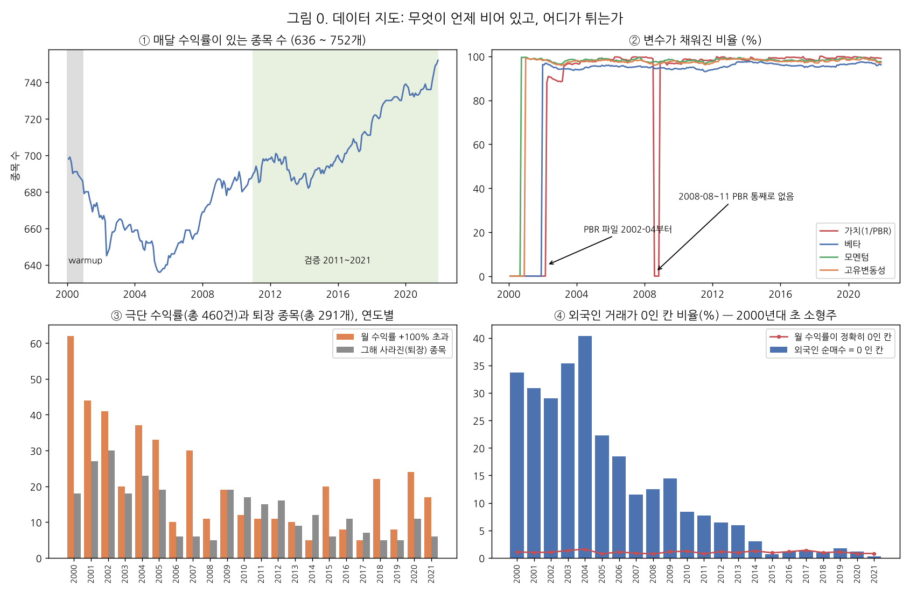
| # | 발견 | 왜 문제가 될 수 있나 | 처리와 결과에 준 영향 |
|---|---|---|---|
| 1 | 빈칸 37%(수익률 있는 칸 180,939 / 286,704) | 빈칸을 0으로 읽으면 "수익률 0%"로 오해 | 상장 전·폐지 후의 구조적 빈칸. 수익률이 있는 칸만 분석 대상. 영향 없음. |
| 2 | 1,086종목 중 43개는 수익률이 한 번도 없음 | 종목 수를 부풀림 | 자동으로 빠짐(실제 분석 1,043종목). |
| 3 | 중간에 사라진 종목 291개, 새로 생긴 종목 약 340개 | 살아남은 종목만 있으면 "생존 편향"(망한 회사가 빠져 수익률이 부풀려짐) | 퇴장 종목도 퇴장 전까지 데이터에 있음 → 생존 편향은 작다. 매달 "그달 있던 종목"만 고르고, 오늘 기준으로 종목을 고르지 않았다. |
| 4 | 퇴장 직전 달은 "다음 달 수익률"이 없음: 422줄(0.24%) | 망하기 직전 큰 손실이 빠지면, 그 종목을 많이 산 쪽이 좋아 보일 수 있음(특히 H1) | 평가에서 빠짐. 점검: 사라진 수익률을 −30%, −100%로 채워도 H1 계수는 +0.82(t 3.3), +0.96(t 3.4)로 오히려 커짐 → 결론 영향 없음(8절 표). |
| 5 | 월 +100% 초과 460건(최대 +1,623%, 2000-02), −90% 이하 46건 | 평균을 쓰는 계산(5분위 평균, Fama-MacBeth)을 몇 종목이 흔듦 | 지우지 않음(진짜일 수 있음: 감자·재상장 등 → 예원님 확인 요청). XGBoost 정답과 IC는 순위라 영향 작음. Fama-MacBeth는 매달 상하위 1%를 잘라도 H1 t 2.8로 유지. |
| 6 | 수익률이 정확히 0인 칸 1,896건(매년 약 1%) | 거래정지 종목일 수 있음 → 가짜 신호 | 제외하고 다시 해도 H1 +0.79(t 3.2) 동일. |
| 7 | 한 종목의 수익률이 중간에 끊긴 구간 156건 | 끊긴 뒤 수익률을 "다음 달"로 착각하면 미래 정보 누수 | 정답(target)은 바로 다음 달 줄이 있을 때만 만든다. 몇 달 건너뛴 수익률은 정답으로 쓰지 않음. |
| 8 | PBR 파일이 2002-04부터만 있음 | 2001-01~2002-03 가치 변수 없음 | 학습 첫 구간(2001~2010) 가치 결측 18.7%. 빈칸은 순위 0.5(중간) + "결측 표시 열"을 넣어 모델이 "모름"을 알게 함. 검증 구간 결측은 0.9%라 판정에는 영향 작음. Fama-MacBeth는 2002-04부터 시작. |
| 9 | 2008-08~11 PBR 4개월이 통째로 없음 | 금융위기 한복판에 가치 정보가 없음 | 그 4개월은 결측 표시로 학습. 검증(2011~)에는 없음 → 판정 영향 없음. 보고서에 반드시 적을 것(원인은 예원님 확인 요청). |
| 10 | PBR = 0인 칸 15.6%(2002~05년엔 49~64%), 음수는 0건 | 0이면 1/PBR = 무한대. 자본잠식이 0으로 들어갔을 가능성 | PBR ≤ 0 → 결측. 2002~05년 가치 정보가 얇다는 점을 기록. |
| 11 | 베타는 60개월(최소 24) 필요 → 2002-01부터, 신규 상장 종목은 첫 2년 결측 | 신규 종목이 체계적으로 빠짐 | 결측 표시 열로 처리. 검증 구간 베타 결측 4.1%. |
| 12 | 외국인 순매수 = 0이 2000~04년 22~40% | 결측인지 진짜 0인지 | "외국인이 거래하지 않았다"는 진짜 0으로 둠. 검증 구간은 2.8%라 영향 작음. 다만 2002~2021 전체로 H2를 볼 때는 앞쪽 정보가 얇다는 점을 감안. |
| 13 | 개인 순매수 비율이 시총의 50%를 넘는 칸 41건(최대 7.1배) | 몇 칸이 H1 결과를 만들었을 수 있음 | |순매수 비율| > 20% 칸을 빼도 H1 +0.78(t 3.2) 동일. 순위 변환으로 영향도 작음. |
| 14 | 2021-12의 정답은 2022-01 수익률(=test) | test 정보 누수 | 2022년 이후는 읽자마자 버림 → 검증은 2011-01~2021-11 131개월(132가 아님). |
추가로 알아 둘 것: 시장수익률은 KOSPI 지수가 아니라 이 데이터 종목의 직전 달 시총 가중 평균으로 직접 만들었다. 가장 큰 종목(삼성전자)의 시총 비중이 2001년 15.7% → 2021년 23.5%라, 베타는 "삼성전자와 얼마나 같이 움직이나"에 가깝게 된다(베타 해석 시 주의).
| 묶음 | 변수 | 만드는 법 | 예상 방향 |
|---|---|---|---|
| 기준선 교과서 위험 요인. 판정 면제 | 베타 | 최근 60개월(최소 24) 종목 초과수익률을 시장 초과수익률에 회귀한 기울기 | + (위험이 크면 보상) |
| 규모 | ln(t월 말 시가총액) | − (작은 회사가 높음) | |
| 가치 | 1/PBR (PBR ≤ 0은 결측) | + (싼 주식이 높음) | |
| 통제 수급 효과와 섞이면 안 되는 것 | 단기 반전 | t월 수익률 | − (많이 오르면 되돌림) |
| 모멘텀 | t−11 ~ t−1월 누적 수익률(t월 제외, 11개월 중 8개월 이상) | ± (한국은 논쟁) | |
| 보강 옛 "유지 후보". 테마 밖이지만 평균 IC를 올려 다시 넣은 것 | 고유변동성 | 최근 24개월(최소 12) 시장모형 잔차의 표준편차 | − (변덕스러운 주식이 낮음) |
| 주식 발행 | ln(t월 주식 수 ÷ 12개월 전 주식 수) | − (주식을 많이 찍으면 낮음) | |
| 수급 | 개인 순매수 (H1) | t월 개인 순매수 금액 ÷ t−1월 말 시총 | − (H1) |
| 외국인 순매수 (H2) | t월 외국인 순매수 금액 ÷ t−1월 말 시총 | + (H2) | |
| 정답 | target | t+1월 수익률. 같은 종목의 바로 다음 달 줄에서만 가져옴 |
모델에 넣을 때는 매달 순위(0~1)로 바꾸고, 빈칸은 0.5(중간) + 결측 표시 열(빈칸이면 1)로 채운다. 결측을 0으로 채우지 않는 이유: 0은 "가장 작은 값"이라는 다른 뜻이 되기 때문이다.
모의고사 비유: 2001~2010년 기출문제로 공부해서 2011년 모의고사를 친다. 채점 후, 2011년까지 포함해 다시 공부하고 2012년을 친다. 이렇게 2021년까지 11번 반복한다.
모델을 돌리기 전에 변수를 하나씩 5분위로 나눠 다음 달 수익률을 본다. 판정용이 아니라 "데이터가 대략 어느 쪽을 가리키나"를 눈으로 보는 단계다.
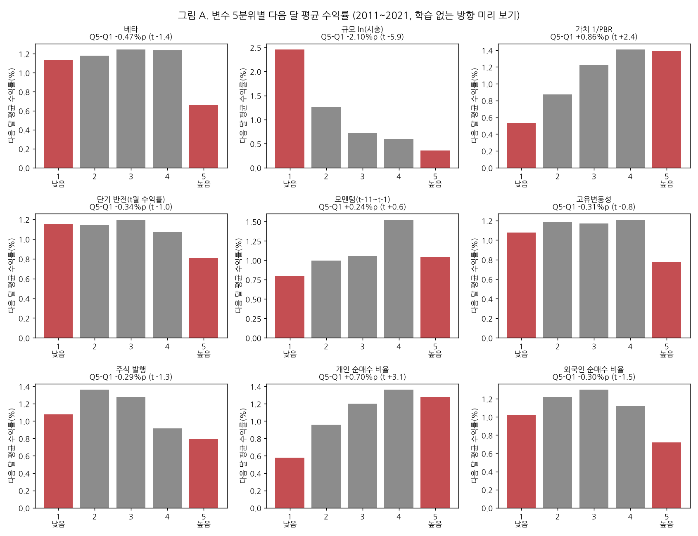
| 변수 | 예상 | 원시 IC 2011~21 (t) | Q5−Q1 %p (t) | 한 줄 해석 |
|---|---|---|---|---|
| 베타 | + | −0.030 (−2.6) | −0.47 (−1.4) | 예상과 반대. 저베타 이상현상(Frazzini & Pedersen 2014) |
| 규모 | − | −0.018 (−1.6) | −2.10 (−5.9) | 방향은 맞지만 극소형 1분위가 대부분 |
| 가치 | + | +0.054 (+4.9) | +0.86 (+2.4) | 가장 깔끔한 단일 신호 |
| 단기 반전 | − | −0.036 (−3.5) | −0.34 (−1.0) | 순위로는 꾸준, 평균 차이는 작음 |
| 모멘텀 | ± | +0.007 (+0.6) | +0.24 (+0.6) | 최근 한국에선 거의 없음 |
| 고유변동성 | − | −0.076 (−6.2) | −0.31 (−0.8) | 순위 신호는 가장 강함(IC 기준 1등) |
| 주식 발행 | − | −0.035 (−6.4) | −0.29 (−1.3) | 방향은 맞음 |
| 개인 순매수 | − | +0.018 (+2.7) | +0.70 (+3.1) | H1과 반대 |
| 외국인 순매수 | + | −0.009 (−1.6) | −0.30 (−1.5) | H2 방향 아님, 유의하지 않음 |
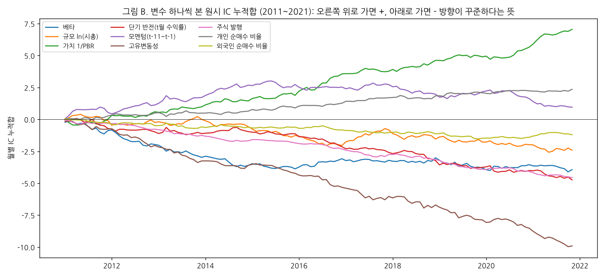
변수를 묶음 단위로 하나씩 더하면서 매번 5절의 누적 학습을 처음부터 다시 돌린다. 각 단계의 131개월 IC를 직전 단계와 비교한다.
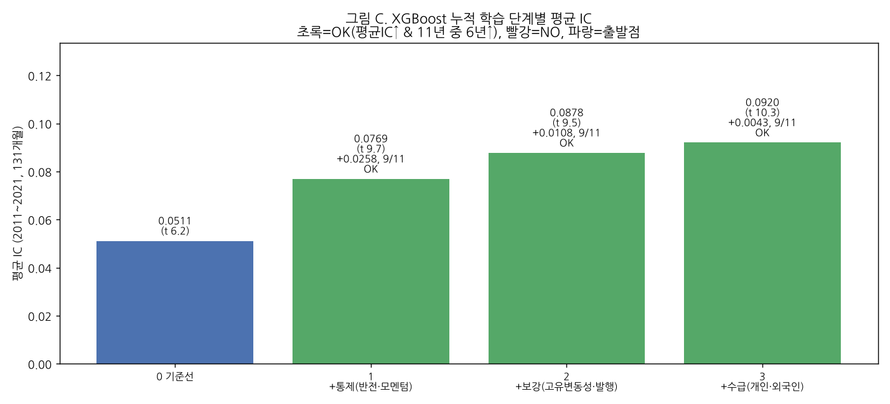
| 단계 | 평균 IC | t | IC>0인 달 | 증가분 (t) | 이긴 해 | 판정 |
|---|---|---|---|---|---|---|
| 0 기준선 | 0.0511 | 6.2 | 70% | — | — | 출발점 |
| 1 + 통제 | 0.0769 | 9.7 | 81% | +0.0258 (5.5) | 9/11 | OK |
| 2 + 보강 | 0.0878 | 9.5 | 83% | +0.0108 (3.6) | 9/11 | OK |
| 3 + 수급 | 0.0920 | 10.3 | 85% | +0.0043 (2.7) | 9/11 | OK |
| 3a 보강 + 개인만 | 0.0925 | 10.5 | 85% | +0.0047 (3.3) | 11/11 | OK |
| 3b 보강 + 외국인만 | 0.0895 | 9.6 | 82% | +0.0017 (1.2) | 7/11 | OK(약함) |
| 누수 점검(정답 섞기) | −0.0013 | −0.3 | 47% | 0 근처 → 미래 정보 누수 없음 | ||
3a·3b는 수급 묶음 안에서 누가 기여했는지 보려고 하나씩 넣어 본 것. 개인이 혼자 11년 모두 이겼고, 외국인은 혼자서는 증가분 t 1.2로 약하다(규칙상 OK지만 근거가 얇음).
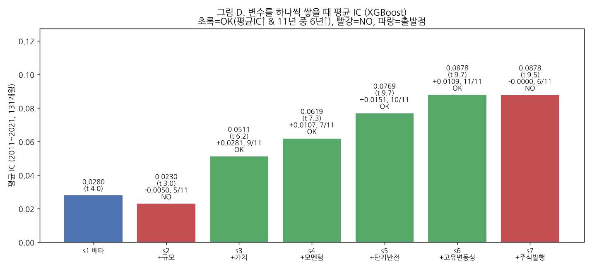
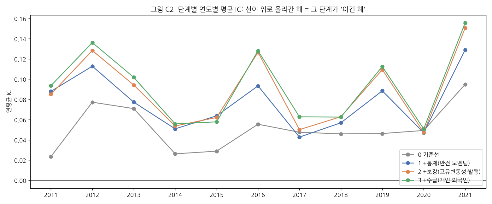
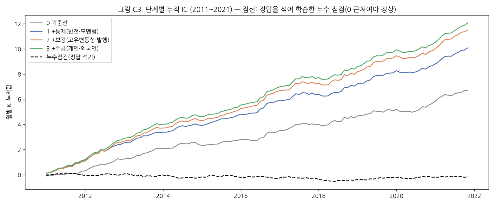
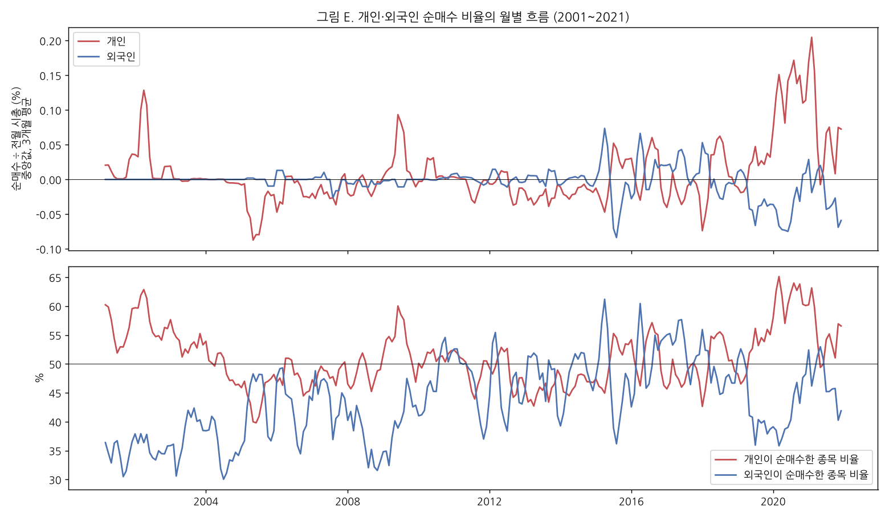
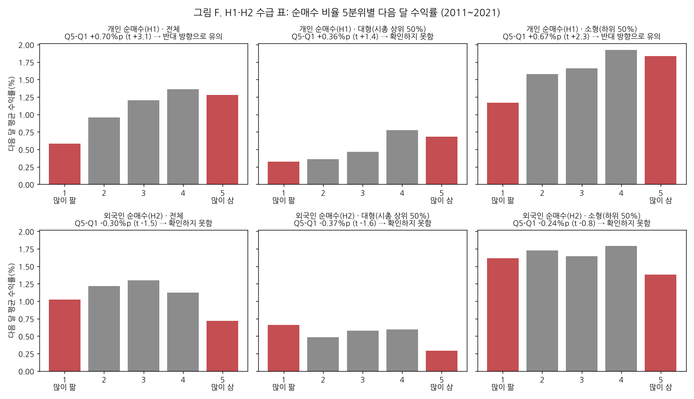
| 가설 | 그룹 | Q1 많이 팖 | Q5 많이 삼 | Q5−Q1 %p | t | 판정 |
|---|---|---|---|---|---|---|
| H1 개인 | 전체 | 0.58 | 1.28 | +0.70 | +3.1 | 반대 방향으로 유의 |
| 대형 | 0.32 | 0.69 | +0.36 | +1.4 | 확인하지 못함 | |
| 소형 | 1.17 | 1.84 | +0.67 | +2.3 | 반대 방향으로 유의 | |
| H2 외국인 | 전체 | 1.02 | 0.72 | −0.30 | −1.5 | 확인하지 못함 |
| 대형 | 0.66 | 0.29 | −0.37 | −1.6 | 확인하지 못함 | |
| 소형 | 1.62 | 1.38 | −0.24 | −0.8 | 확인하지 못함 |
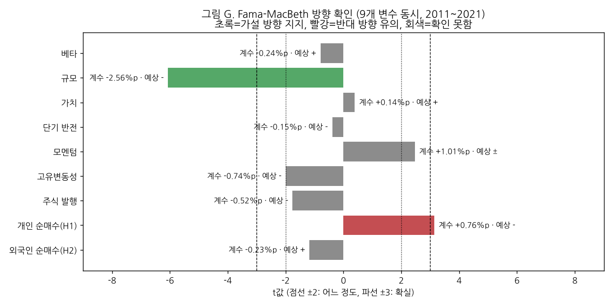
| 변수 | 예상 | 2011~21 계수 %p (t) | 판정(검증 구간) | 2002~21 계수 (t) |
|---|---|---|---|---|
| 베타 | + | −0.24 (−0.8) | 확인하지 못함 | +0.35 (+1.3) |
| 규모 | − | −2.56 (−6.1) | 확실하게 지지 | −2.05 (−5.2) |
| 가치 | + | +0.14 (+0.4) | 확인하지 못함 | +0.78 (+2.5) |
| 단기 반전 | − | −0.15 (−0.4) | 확인하지 못함 | −0.61 (−2.0) |
| 모멘텀 | ± | +1.01 (+2.5) | 통제(방향 가설 없음) | +1.51 (+4.6) |
| 고유변동성 | − | −0.74 (−2.0) | 확인하지 못함(t −1.99) | −1.46 (−5.0) |
| 주식 발행 | − | −0.52 (−1.8) | 확인하지 못함 | −0.77 (−3.2) |
| 개인 순매수 H1 | − | +0.76 (+3.1) | 반대 방향으로 유의 | +0.54 (+2.8) |
| 외국인 순매수 H2 | + | −0.23 (−1.2) | 확인하지 못함 | −0.40 (−2.7) 반대 |
9개를 한꺼번에 넣으면 서로 겹치는 변수(가치·고유변동성·규모)는 t가 나뉘어 작아진다. 그래서 가치·단기 반전은 검증 구간에서 "확인 못함"이지만, XGBoost에서는 분명히 쓸모가 있었다(7절). 이것도 "쓸모와 방향은 따로"의 예다.
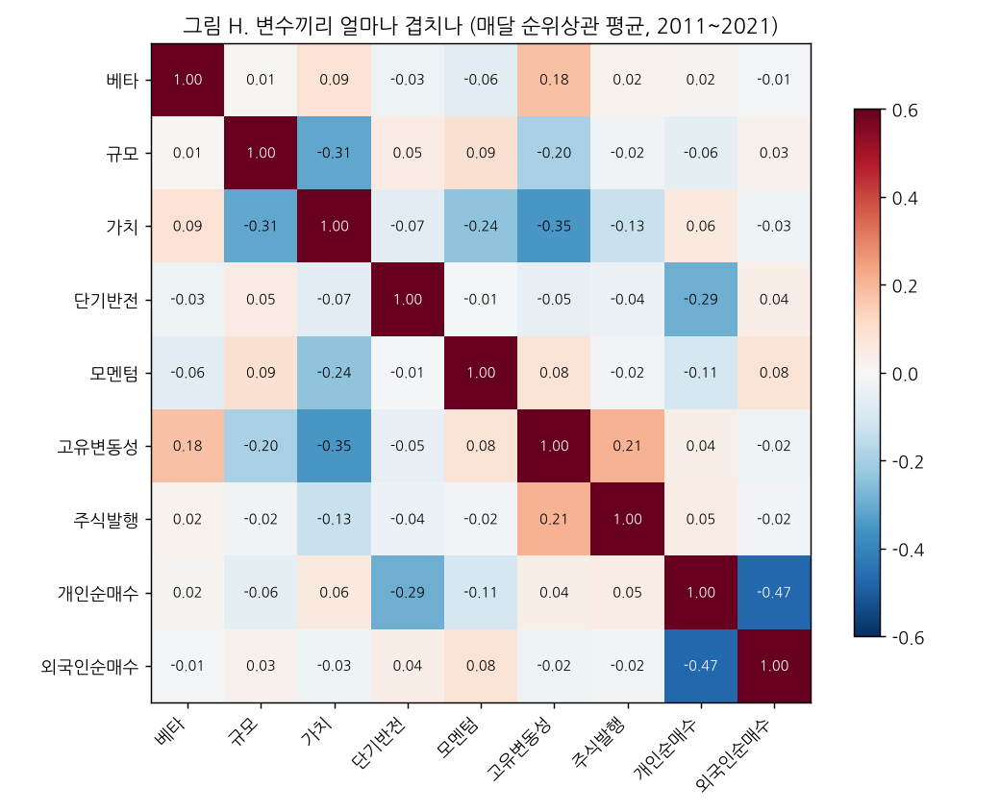
| 점검 (Fama-MacBeth 9개 변수, 2011~2021) | 개인 계수 (t) | 외국인 계수 (t) |
|---|---|---|
| 기본 | +0.76 (3.1) | −0.23 (−1.2) |
| 정답의 극단값을 매달 상하위 1%에서 자름(#5) | +0.60 (2.8) | −0.20 (−1.1) |
| 퇴장 종목의 사라진 다음 달 수익률을 −30%로 채움(#4) | +0.82 (3.3) | −0.19 (−1.0) |
| 같은 것을 −100%(완전 손실)로 채움(#4) | +0.96 (3.4) | −0.12 (−0.6) |
| 순매수 비율이 ±20% 넘는 칸 제외(#13) | +0.78 (3.2) | −0.22 (−1.2) |
| t월 수익률이 정확히 0인 칸(거래정지 의심) 제외(#6) | +0.79 (3.2) | −0.22 (−1.2) |
| 연도별 Q5−Q1 부호 | 11년 중 10년 + | 11년 중 8년 − |
| 변수 | 쓸모 (XGBoost) | 방향 (FM 2011~21) | 결정 | 이유 |
|---|---|---|---|---|
| 베타 | 출발점 0.028 | 확인 못함(예상과 반대 부호) | 남김 | 기준선(판정 면제). 단독으로는 저베타 이상현상(−). |
| 규모 | NO (−0.005, 5/11) | 확실 지지 (t −6.1) | 남김 | 기준선(판정 면제). 혼자서는 손해지만 가치와 함께일 때 가장 강한 방향 신호. 빼면 소형주 효과가 수급으로 섞일 위험. |
| 가치 | +0.028, 9/11 | 확인 못함 (전체 기간은 지지 t 2.5) | 남김 | 기준선. 하나씩 쌓기에서 가장 큰 상승. |
| 모멘텀 | +0.011, 7/11 | 통제(방향 가설 없음) | 남김 | 통제 규칙 통과. |
| 단기 반전 | +0.015, 10/11 | 확인 못함 | 남김 | 통제 규칙 통과. 개인 순매수와 겹치므로(−0.29) 반드시 함께 둬야 H1을 공정하게 판정. |
| 고유변동성 | +0.011, 11/11 | 확인 못함(t −1.99), 전체 기간은 확실 지지 | 남김 | 보강 묶음의 실제 기여자. 근거 논문 필요(Ang et al. 2006). |
| 주식 발행 | NO (−0.0000, 6/11) | 확인 못함, 전체 기간은 지지 | 탈락 제안 | 방향은 맞지만 고유변동성 다음에 넣으면 새 정보가 없음. 묶음 판정은 OK였으므로 팀이 결정. |
| 개인 순매수 | +0.0047, 11/11 | 반대 방향 유의 (t +3.1) | 남김 | 쓸모는 가장 꾸준(11년 전부). H1은 지지되지 않음, 반대 방향. |
| 외국인 순매수 | +0.0017, 7/11 (약함) | 확인 못함 | 남김(약함) | 규칙상 OK. 증가분 t 1.2로 근거 약함. H2 확인 못함. |
한계: 고유변동성은 월 데이터 24개월 시장모형으로 만들었다(일 데이터가 아님). 시장수익률은 데이터 종목의 시총 가중 평균. Fama-MacBeth t는 일반 t(Newey-West 3개월 보정 t도 거의 같음: 개인 +3.18, 외국인 −1.15).
네, 그대로 이어서 쌓을 수 있다. 코드가 단계 목록에 변수를 더하는 구조라서, 뉴스 변수만 만들어지면 같은 규칙과 같은 학습 방식으로 바로 돌아간다.
| 가설 | 추가할 것 | 판정 |
|---|---|---|
| H3 화제 논조 | 4단계 "+뉴스": topic_tone(화제형 기사 KR-FinBert-SC P(긍정)−P(부정) 월평균) + no_news(그달 화제 기사 없음 = 1). 기사가 없으면 논조는 0.5(중간) + 표시 1. | 쓸모: 3단계 대비 평균 IC↑ & 6/11년. 방향: FM에서 topic_tone 계수 + 이고 t ≥ 2. |
| H4 설거지 표 | 모델 밖 비교표. 호재 종목(화제 기사 있고 논조가 그달 중간값보다 높음) 안에서 개인 많음 vs 적음의 다음 달 수익률 차이 − 기사 없는 종목에서의 같은 차이. | 차이의 차이가 − 이고 t ≤ −2 → 지지. |
| 순서 | 파일 (연습장/) | 하는 일 → 결과 |
|---|---|---|
| 1 | step1_features.py <데이터폴더> | 변수·정답 만들기 → out/features.parquet, coverage_by_year.csv |
| 2 | step2_preview.py | 방향 미리 보기 → 그림 A·B, preview_*.csv |
| 3 | step3_xgb_stages.py | XGBoost 누적 학습 단계별 IC(약 8분, CPU) → stage_ic*.csv |
| 4 | step4_fm_h1h2.py | Fama-MacBeth, 수급 표 → 그림 E·F·G |
| 5 | step5_plots.py · step6_bigcap.py | 그림 C·C2·C3·D, 규모별 IC |
| 6 | step7_datamap.py · step8_corr.py | 그림 0·H |
패키지: xgboost 3.2.0(팀 requirements와 같음), pandas, numpy, matplotlib, koreanize-matplotlib. 입력 데이터는 Git에 올리지 않는다(팀 규칙). 2022년 이후 행은 step1에서 읽자마자 버린다.